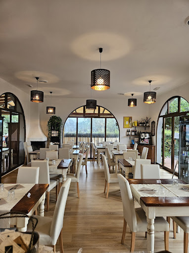

Chi Siamo
L'Osteria da Biagio è un ristorante a conduzione familiare situato nel cuore di San Giuliano Terme, alle porte di Pisa. Offriamo un'esperienza culinaria autentica, con piatti della tradizione toscana preparati con ingredienti freschi e di stagione. La nostra passione per la buona cucina e l'ospitalità vi farà sentire come a casa.
Prenotazioni
Per prenotare un tavolo, chiamaci al numero +39 338 297 6669. Presto sarà disponibile anche la prenotazione online.
Galleria Fotografica


Contatti
Indirizzo: Via Sant'Elena, 45, 56017 San Giuliano Terme (Pisa)
Telefono: +39 338 297 6669